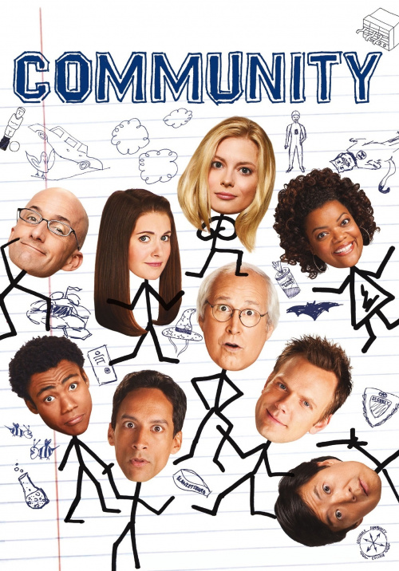
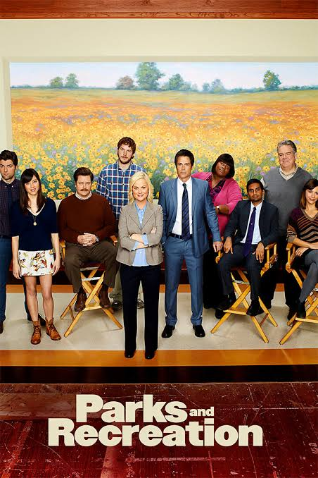
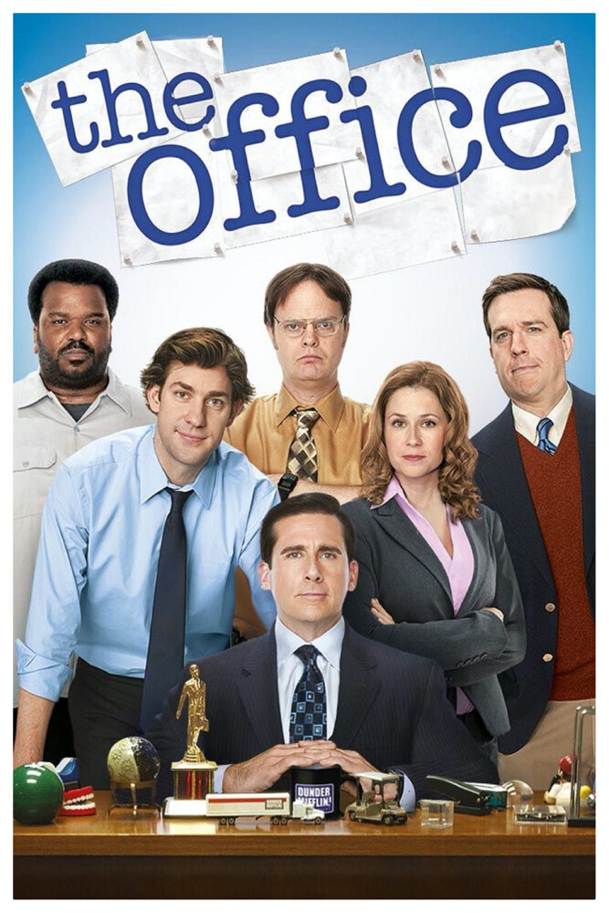

Now showing / The channel guide
Choose your universeCommunity

Community is an American television sitcom created by Dan Harmon. The series ran for 110 episodes over six seasons, with its first five seasons airing on NBC from September 17, 2009, to April 17, 2014, and its final season airing on Yahoo Screen from March 17 to June 2, 2015.
Malcolm of the Middle

Malcolm in the Middle is an American television sitcom created by Linwood Boomer for the Fox Broadcasting Company. The series premiered on January 9, 2000, and ended on May 14, 2006, after seven seasons consisting of 151 episodes.
Parks and Recreation

Parks and Recreation (also known as Parks and Rec) is an American political satire mockumentary television sitcom created by Greg Daniels and Michael Schur. The series aired on NBC from April 9, 2009, to February 24, 2015, for 125 episodes, over seven seasons. A special reunion episode aired on April 30, 2020.
The Office

The Office is an American mockumentary sitcom television series. It is based on the BBC series The Office created by Ricky Gervai and Stephen Merchant, and adapted for NBC by Greg Daniels. The show depicts the everyday work lives of office employees at the Scranton, Pennsylvania branch of the fictional Dunder Mifflin Paper Company. It aired from March 24, 2005, to May 16, 2013, for a total of nine seasons consisting of 201 episodes.